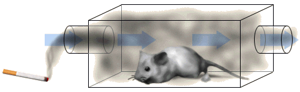
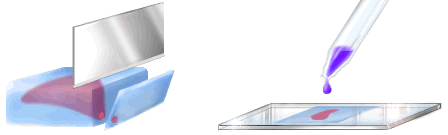

Environmental Tobacco Smoke and Lung Development Activity
Methods
Mice were used in this experiment. Two groups of mice were studied, the experimental group, which was exposed to ETS, and the control group, which was not exposed to ETS. In the experimental group, pregnant female mice were exposed to ETS for one hour per day, 5 days per week until the birth of the pups. After birth the pups were exposed to ETS for 1 hour per day, 5 days per week for 3 weeks. In the control group, neither the pregnant female mice nor their pups were exposed to ETS.
After 3 weeks lung tissue samples were collected, embedded in an epoxy plastic, sliced very thinly, stained and photographed under the microscope.



The Biology Project
The University of Arizona
Tuesday, September 16, 1997
Contact the Development Team
http://biology.arizona.edu
All contents copyright © 1997. All rights reserved.